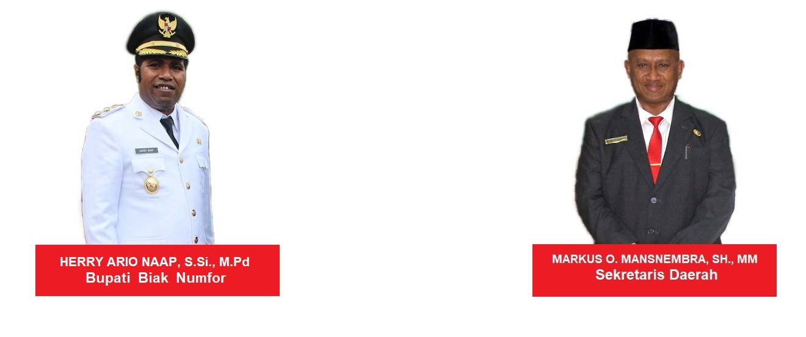
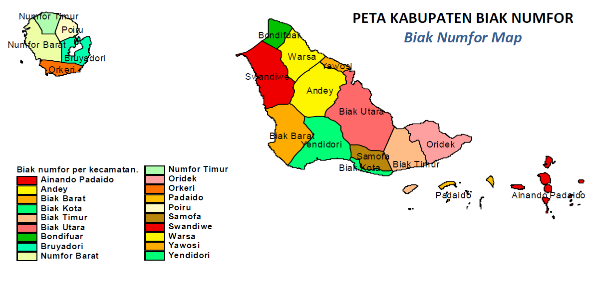

Alamat : Jalan Goa Jepang, Kampung Sumberker, Distrik Samofa, Kabupaten Biak Numfor, Provinsi Papua, Kode Pos : 98156
Pemimpin wilayah

Sejarah
Sejarah
Periode Tahun 1526 – 1616
Pada tahun 1526 Gubernur Portugis untuk Ternate Jorge de Menezes berangkat dari Malaka menuju Ternate. Disebabkan badai, kapalnya terdampar di Warsa Biak Utara. Selama 6 bulan ia tinggal di Warsa (Desember 1526 – Mei 1527) menunggu cuaca yang baik dan di bulan Mei 1527 ia berangkat meninggalkan Biak serta tiba di Ternate pada tanggal 31 Mei 1527.
Periode Tahun 1616 – 1919
Pada tahun 1616 Jacob Le Maire dan Willem Cornelizs Schoten yang berlayar melewati Kepulauan Biak Numfor sehingga untuk pertama kali disebut Schouten Eilanden. Pada periode ini juga tepatnya tanggal 26 April 1908 Pendeta F.J.F Fan Hasselt membuka Pos Zending pertama di Maudori dengan menempatkan Guru Petrus Kafiar putra asli Maudori (Biak) yang menjadi Guru Injil pertama di Irian Jaya. Petrus Kafiar adalah lulusan dari Depok Jawa Barat. Pusat Pemerintah pertama di Anggraidi (Paray), kemudian tempat ini diusahakan pedagang Belanda (VOC) kerja sama dengan pedagang Cina sebagai tempat pelabuhan Kapal Dagang VOC. Pada 24 Agustus 1828 Pendirian Benteng Fort Du Bus di Teluk Triton yang menandakan kepemilikan Belanda atas Tanah di Nieuw Guinea. Tanggal 20 Februari 1836 Benteng Fort Du Bus ditinggalkan karena permusuhan dengan penduduk setempat tetapi juga penyakit malaria yang membunuh sekitar 110 orang serdadu. Pada 5 Februari 1855 Ottow dan Geissler memulai pekerjaan Zending di Mansinam. Tahun 1891 Pendirian Posthauder di Jende Roon Teluk Wondama. Tanggal 7 Desember 1892 Pendirian pos pemerintahan Belanda di Merauke untuk menertibkan suku Marind Anim. Pada 20 Desember 1892 Pos tersebut ditinggalkan karena diserang oleh suku Marind Anim. Tanggal 16 Mei 1895 Perjanjian Den Haag yang menetapkan pulau Nieuw Guinea dibagi dua, wilayah Barat dikuasai oleh Belanda dan wilayah Timur oleh Jerman dan Inggris. Pada 5 Februari 1898 Pemerintah Belanda menetapkan pembentukan dan pembagian Daerah Administratif Afdeling Nieuw Guinea Utara Selatan dan Barat. Tanggal 8 November 1898 Residen Ternate Dr Horst melantik L.A Van Oosterzee sebagai kontrolir pertama Afdeeling Nieuw Guinea Utara Selatan dan Barat. Pada 18 Juni 1901 Afdeeling Nieuw Guinea Barat dan Selatan dipisahkan. Tanggal 14 Agustus 1905 Misionaris Hati Kudus tiba di Merauke dan menyebarkan agama Katholik. Tahun 1909 dibuka Pos Pemerintahan Humboldbaai dan diangkat J.A.W. Coenen sebagai Gezaghebber di Pos Itu. Pada tanggal 17 Juli 1918 dilakukan perluasan Wilayah Pemerintahan dengan membuka Pos Pemerintahan di wilayah Schouten Eilanden yang berkedudukan di Bosnik.
Periode Tahun 1919 – 1945
Periode ini kedudukan Anggraidi (Paray) sebagai pusat perdagangan dan pemerintahan dipindahkan ke Bosnik sebagai pusat perdagangan dan pemerintahan yang baru. Selanjutnya Bosnik merupakan ibukota pertama daerah Biak Numfor hingga tahun 1945. Pada Bulan April 1942 pecah Perang Dunia II. Sebagai puncaknya tanggal 22 April 1944 tentara Sekutu merebut kembali Hollandia (Jayapura) di bawah pimpinan Jenderal Douglas Mc Arthur dan mendarat di Biak pada tanggal 27 Mei 1944.
Periode Tahun 1945 – 1962
Dengan kemenangan Sekutu (1944 – 1945) kekuatan pada waktu itu berada di tangan NICA (Netherlandsch Indies Civil Administration). Setelah kekuasaan Sekutu berakhir daerah ini diserahkan kembali pada Pemerintahan Hindia Belanda. Mengingat letak Ibukota Pemerintahan di Bosnik kurang strategis baik dari segi pengembangan maupun perluasan kota itu sendiri, di samping fasilitas yang tersedia pada waktu itu tidak memadai bila dibandingkan dengan fasilitas yang ditinggalkan oleh tentara Sekutu di Nicakamp (Yendidori) maka pada tahun 1946 ibukota dipindahkan ke Nicakamp. Tahun 1953 ibukota dipindahkan ke Biak sebagai ibukota Order Afdeling Schouten Eilanden.
Periode Tahun 1963 – Sekarang
Berdasarkan resolusi yang diterima oleh PBB pihak Belanda menyerahkan Irian Barat (Nederland New Guinea) pada UNTEA (United Nation Temporary Executive Authority) pada tanggal 1 Oktober 1962. Selanjutnya UNTEA menyerahkannya kepada Indonesia. Pada tanggal 1 Mei 1963 jam 12.30 WIT, diadakan upacara penyerahan Irian Barat dari UNTEA kepada Pemerintah RI di depan Kantor Order Afdeling Schouten Eilanden yang ditandai dengan penurunan bendara UNTEA digantikan dengan pengibaran Bendera Merah Putih. Pada saat yang sama penggantian peredaran uang Golden dengan Rupiah Irian Barat (IBRP) dengan dibukanya peti uang IBRP oleh Lukas Rumkorem.
Tonggak sejarah lain dalam peristiwa penyerahan kedaulatan ini adalah penanaman Pohon Beringin di depan Kantor Order Afdeling Schouten Eilanden tepatnya di Lapangan Mandala Biak oleh HPB (Hoofd Plaatselijk Bestuur) atau Kepala Pemerintahan Setempat Arnold Mampioper. Arnold Mampioper putera Indonesia kelahiran Biak adalah HPB pertama di saat kedaulatan UNTEA ke Republik Indonesia yang pada waktu itu juga menjabat sebagai Ketua Dewan Daerah Biak.
Dalam perkembangan selanjutnya berdasarkan UU Nomor 12 Tahun 1969 sampai dengan tahun 1984 Kabupaten Biak Numfor bernama Kabupaten Teluk Cenderawasih sebagai salah satu kabupaten yang saat itu masih membawahi daerah
Yapen Waropen dan sebagian daerah Paniai.
Pada Tahun 1984 sebutan Kabupaten Teluk Cenderawasih diubah dengan sebutan Kabupaten Biak Numfor berdasarkan SK Bupati Biak Numfor Nomor 61 SK/VII/1984 tanggal 26 Juli 1984.
Pada tahun 1973 Stevanus Yarangga bersama tokoh adat merencanakan untuk membangun rumah-rumah disepanjang jalan goa jepang. Lalu, pada tahun 1980 Stevanus Yarangga dan tokoh adat mengusulkan kepada kepala kampungke-4 atau disebut dengan RK 4 Sumberker.
Pada tahun 1981 resmi menjadi RK-4 (Rukun Kampung 4) dari Desa Ambroben. Lalu, pada tahun 1991 diadakan pemilihan Kepala Desa Sumberker dari dan Yunus Morin terpilih menjadi Kepala Desa Sumberker pada periode 1991 s/d 2001.
Profil wilayah desa

PROFIL POTENSI DESA
1. Potensi Sumber Daya Alam
Potensi yang dimiliki Kampun Sumberker adalah sumberdaya alam yang dimiliki kampung seperti : lahan kosong, perkebunan, hutan, pegunungan karang, kayu, batu yang pada saat ini belum dimanfaatkan secara maksimal.
2. Potensi Sumber Daya Manusia
Potensi yang dimiliki Kampung Sumberker adalah tenaga, kader posyandu, tutor PAUD.
3. Kondisi Geografis
Adanya bukit dan banyaknya kayu, batu karang yang dapat dipergunakan untuk menunjang kegiatan pembangunan.
4. Kondisi Perekonomian
Adanya masyarakat yang pekerjaannya lebih berfokus pada pekerjaan tidak tetap. Sehingga, mengakibatkan banyaknya pengangguran dan tidak tersedianya lapangan pekerjaan. Oleh karena itu, tingkat kesejahteraan belum tercukupi atau masih kategori keluarga belum sejahtera.
5. Sosial Budaya
Banyaknya keanekaragaman budaya seperti budaya jawa, sulawesi, kalimantan, sumatera, dan lain sebagainya pada Kampung Sumberker.
6. Sarana Prasarana
Terdapat tempat ibadah, PAUD dan ruang serba guna lainnya.
VISI DAN MISI
VISI
Menjadikan desa Sumberker menjadi desa cerdas, mandiri dam sejahtera melakukan perubahan.
MISI
Mewujudkan dan meningkatkan harapan masyarakat desa yang majemuk menjadi satu dan membangun desa.